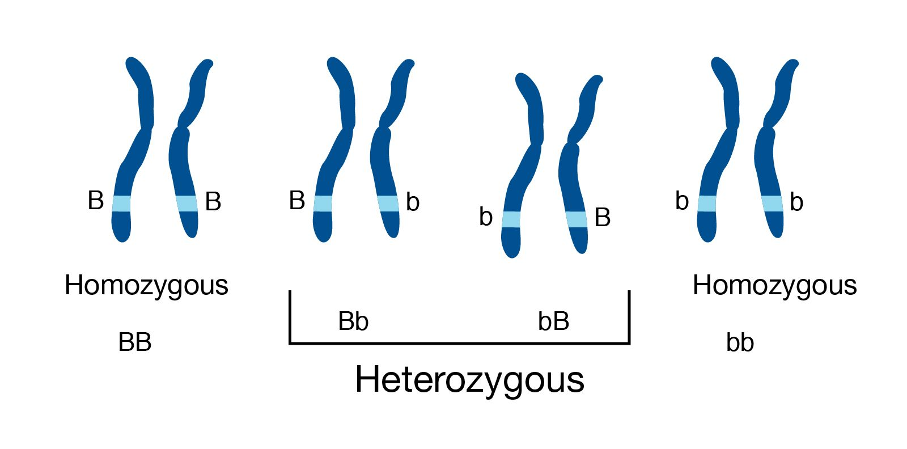
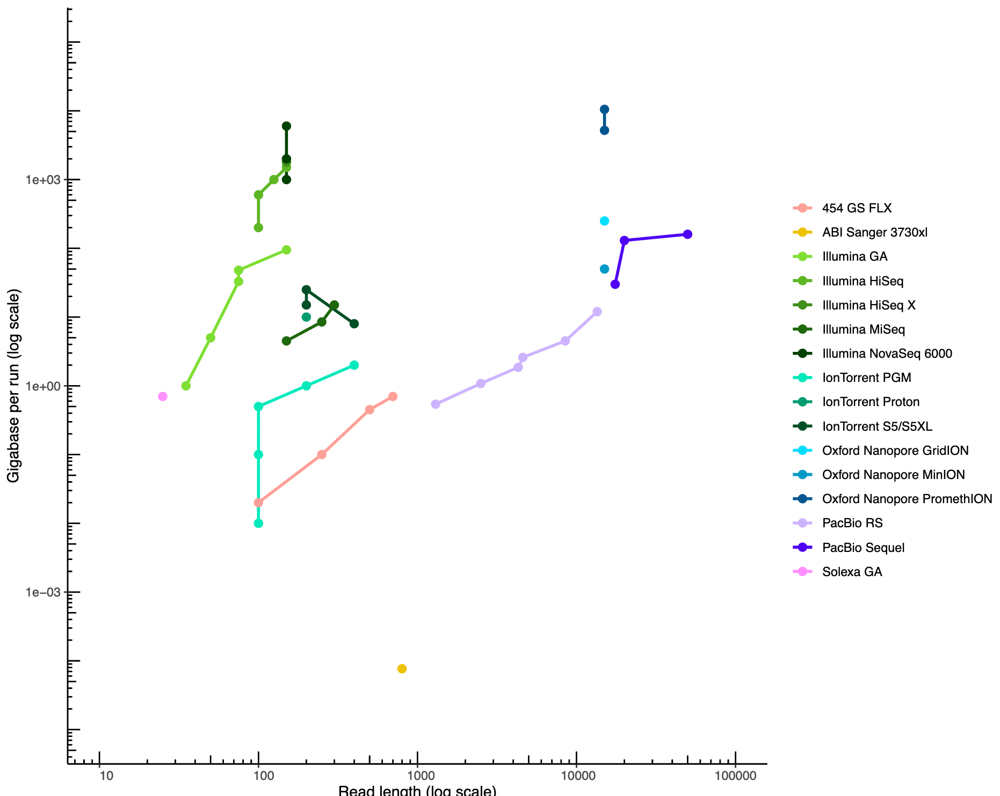
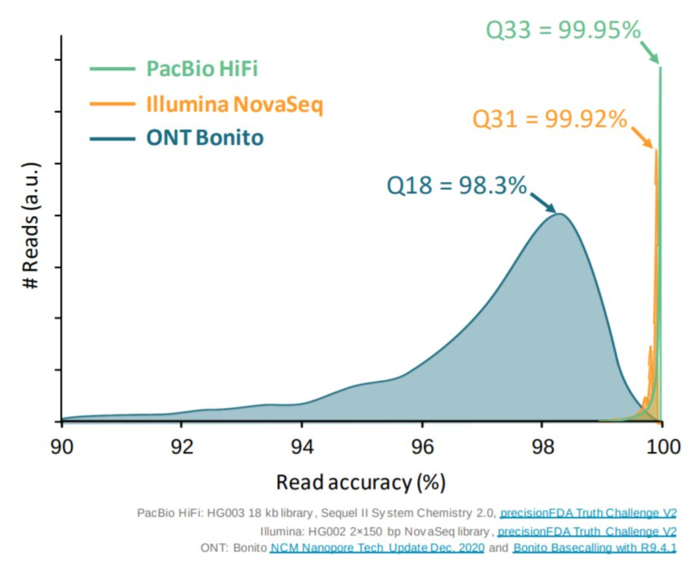
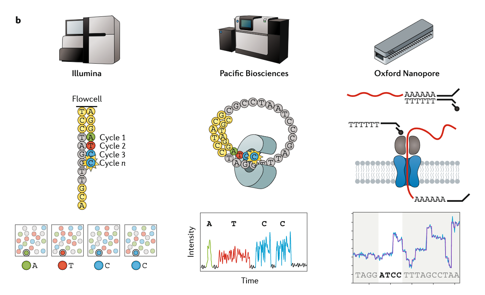

An introduction to get started in genome assembly and annotation
Contributors
 Anthony Bretaudeau
Anthony Bretaudeau
 Alexandre Cormier
Alexandre Cormier
 Stéphanie Robin
Stéphanie Robin
 Erwan Corre
Erwan Corre
 Laura Leroi
Laura Leroi
 Erasmus+ Programme
Erasmus+ Programme
Questions
What are the guidelines before starting a Genome Assembly and Annotation project?
Steps before starting a genome project
.left[
-
Step 1: Build a wide community for the project if possible
-
Step 2: Gather information about the target genome
-
Step 3: Select the best possible DNA source and extraction
-
Step 5: Choose an appropriate sequencing technology
-
Step 6: Check the computational resources and requirements ]
Build a wide community for the project (if it’s possible)
.left[ The aim of a genome project is to sequence the entire target genome for a wide range of genomics applications. ]
.left[ Analyses, reanalyses and integration of genomic and other phenotype information require: ]
- Facilities: Wet lab, sequencing, bioinformatics,…
- Personnel: Skill intensive
- Software: Knowledge intensive
.left[ warning Data storage, maintenance, transfer, and analysis costs will also likely remain substantial and represent an increasing proportion of overall sequencing costs in the future. ]
Genome information: Genome size
.pull-left[ How to collect informations?
- Flux cytometry
- Databases:
- Fungi: http://www.zbi.ee/fungalgenomesize
- Animals: http://www.genomesize.com
- Plants: http://data.kew.org/cvalues
- Bibliography ]
.pull-right[ .image-100[ ]]
.footnote[https://commons.wikimedia.org/w/index.php?curid=19537795]
Genome information: GC content
.pull-left[ Why?
.left[ Sequencing is not random! GC and AT rich regions are under-represented. ]
How to solve?
- Chemistry quirks
- Increase the sequencing depth
- Technologies combination (both long and short reads) ]
.pull-right[
.image-100[
 ]]
]]
.footnote[Chaisson et al. Genetic variation and the de novo assembly of human genomes. Nat Rev Genet 16, 627–640 (2015).]
Genome information: Ploidy level
.pull-right[ .image-55[ ]]
.pull-left[
Ploidy (N):
Number of sets of chromosomes in a cell
| Organism | Ploidy |
|---|---|
| Bacteria | 1N |
| Human, mouse, rat | 2N |
| Amphibians (Xenopus) | 2N to 12N |
| Plants (wheat) | 6N |
| Autopolyploid | . |
| Hybrids | . |
]
Higher ploidy -> harder to assemble => Increase of sequencing depth
.footnote[Daniel Hartl. Essential Genetics: A Genomics Perspective. Jones & Bartlett Learning. p. 177. ISBN 978-0-7637-7364-9. (2011).]
Genome information: Heterozygosity level
.pull-left[ .left[ Heterozygous: Locus-specific, diploid (2N) organism has two different alleles of a particular gene at the same locus ]]
.pull-right[ .image-100[  ]]
.left[ Heterozygosity is a metric used to denote the probability an individual will be heterozygous for a particular allele ]
Higher heterozygosity -> harder to assemble => Increase of sequencing depth
.footnote[https://www.genome.gov/genetics-glossary/heterozygous]
Genome information: Heterozygosity level
.image-125[ ]
.footnote[Heng Li’s blog: lh3.github.io/2021/04/17/concepts-in-phased-assemblies]
Genome information: Complexity aka repeats elements
.left[ It is impossible to resolve repeats of length L unless you have reads longer than L ]
Most common source of assembly errors:
.pull-left[ .image-65[ ]]
.pull-right[ .image-65[ ]]
Genome information: Others
- Karyotype: chromosome number
- Sex chromosome system: None, XY, ZW, UV,…
- Purity: possible presence of contaminants and/or symbionts?
- Is there any other useful data (NCBI, SRA, ENA, etc) that could improve my assembly?
Genome information: Tips
.pull-left[
- Flux cytometry : genome size and ploidy level
- k-mer frequency from Illumina reads : genome size, ploidy level, GC content, heterozygosity and even repeats composition! ]
.pull-right[ .image-20[ ]]
The best possible DNA
.left[ Select the best possible DNA source and extraction. The extraction of high-quality DNA is the most important aspect of a successful genome project
The lack of a good starting material will limit the choice of sequencing technology and will affect the quality of obtained data ]
The best possible DNA: Chemical purity of DNA
.left[ Sample-related contaminants:
- Polysaccharides
- Proteoglycans
- Proteins
- Secondary metabolites
- Polyphenols
- Humic acids
- Pigments
- Etc,…
All these contaminants can impair the efficacy of library preparation in any technology, especially true for PCR-free libraries (both PacBio and ONT) ]
The best possible DNA: Quantity of DNA
.left[ Different technologies require different amount of DNA:
- Illumina and 10x > 3 ng
- BioNano > 200 ng
- ONT > 1 μg
- Dovetail (Hic) > 5 μg
- PacBio > 15 μg ]
The best possible DNA: Structural integrity of DNA
.left[ High Molecular Weight (HMW) for Nanopore/PacBio (obtained mainly from fresh material) ]
The best possible DNA: Tips
.left[
- Many DNA extraction protocol available for a lot of species/taxa (VGP, Darwin Tree of Life, Nanopore, PacBio, etc)
- Keep DNA samples from the same individual in case of library preparation/sequencing fail, need more coverage, new sequencing technology, etc
- Use a single individual and sequence a haploid, highly inbred diploid organism, or isogenic individual ]
Appropriate sequencing technology
.left[ Mostly dependant on the quantity and quality of DNA and the cost but many parameters need to be considered prior to running an NGS experiment:
- Short versus long reads or both
- Read length
- Read quality/error rate
- Genome read coverage/depth
- Library preparation
- Downstream applications ]
Appropriate sequencing technology: Primary assembly
.left[
- Illumina: short reads (up to 2x250bp) with high quality reads. Sequencing bias with AT/GC rich regions
- IonTorrent: short reads (up to 500bp) with medium quality reads
- Nanopore: long reads (average ~15kbp) with low quality reads. Errors are not randomly distributed!
- PacBio:
- CLR: long reads (average ~20kbp) with low quality reads
- HiFi: long reads (average ~15kbp) with high quality reads ]
Appropriate sequencing technology: Scaffolding
.left[
- HiC: single or double restriction enzyme fragmentation. Need huge amount of coverage.
- Omni-C: sequence-independent endonuclease ]
Appropriate sequencing technology: Short vs long reads
.pull-left[ Depending on the sequencing technology reads length and sequencing depth are different.
- More sequencing depth but shorter reads
- Longer reads but less sequencing depth ]
.pull-rigth[ .image-40[  ]]
.footnote[https://github.com/alexcorm/developments-in-next-generation-sequencing]
Appropriate sequencing technology: Short vs long reads
.pull-left[ Reads accuracy differs depending on the sequencing technology:
- Illumina and PacBio HiFi: more accurate
- ONT and PacBio CLR: less accurate (but longer) ]
.pull-rigth[ .image-40[  ]]
Appropriate sequencing technology
.image-100[  ]
.footnote[Stark, R., Grzelak, M. & Hadfield, J. RNA sequencing: the teenage years. Nat Rev Genetics 20, 631–656 (2019).]
Appropriate sequencing technology: Coverage versus depth
.left[ Coverage: fraction of the genome sequenced at least by one read
Depth: average number of reads that cover any given region
Intuitively, more reads should increase coverage and depth. ]
.image-40[
]
.footnote[Chaisson et al. Genetic variation and the de novo assembly of human genomes. Nat Rev Genet 16, 627–640 (2015).]
Computational resources and requirements
.left[ To succeed you need to have sufficient compute resources (CPUS, RAM, walltime and storage).
- The resource are different between:
- Assembly
- Annotation
- Other analysis tools
- For genome assembly:
- Running times and RAM increase with the type and amount of data
- More data for large genomes, increase running time/RAM/Storage
- Most of tools running on a single node: parallelized but not distributed
- For genome annotation:
- Mapping/alignment of external data (RNA-seq, proteins) can be parallelized and distributed
- Annotation process can be parallelized and distributed ]
Typical sequencing strategies: Bacterial genomes
.left[
- PacBio CLR or Oxford Nanopore reads at 40-50x coverage, self-correction and/or hybrid correction (using Illumina data)
- PacBio HiFi reads at 20-30x coverage
- Illumina 2x250bp paired-end reads from MiSeq ]
Typical sequencing strategies: Larger genomes
.left[
- PacBio CLR or Oxford Nanopore reads at 100x coverage, hybrid correction using Illumina data and scaffolding using HiC or Omni-C
- PacBio HiFi reads at 30x coverage and scaffolding using HiC or Omni-C
- PacBio HiFi reads at 30x coverage, 120x Oxford Nanopore ultra long reads ]
Thank you!
This material is the result of a collaborative work. Thanks to the Galaxy Training Network and all the contributors! This material is licensed under the Creative Commons Attribution 4.0 International License.
This material is licensed under the Creative Commons Attribution 4.0 International License.